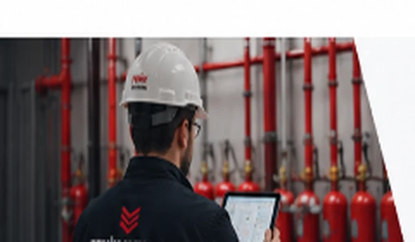

Yangın Söndürme Sistemleri
Altı farklı gazlı söndürme sistemi kuruyoruz. Hangisinin uygun olduğu mahalin riskine, insan varlığına ve kesinti toleransına bağlıdır.

KRİTİK ALANLAR İÇİN GÜVENİLİR SÖNDÜRME ÇÖZÜMLERİ
Uygulama Alanına Özel Gazlı Söndürme Sistemleri
Her sistemin kendine özgü özellikleri, avantajları ve kullanım alanları vardır. İhtiyacınıza en uygun çözümü belirlemek için mühendislik ekibimizle iletişime geçebilirsiniz.
GAZLI SİSTEM
FM200
Kolay gazlı yangın söndürme
 TEMİZ GAZ
TEMİZ GAZ
NOVEC 1230
Kalıntı bırakmayan temiz gaz
 İNSANSIZ HACİM
İNSANSIZ HACİM
CO₂
Trafo, jeneratör ve kablo galerisi
 MİKRO HACİM
MİKRO HACİM
Pano İçi
Yangın panonun içinde başlar
 UL 300
UL 300
Davlumbaz
Endüstriyel mutfak yağ yangını
 BORUSUZ
BORUSUZ
Aerosol
Kompakt teknik hacimler
01 / 06
Doğru Sistem, Doğru Koruma
Seçim beş adımlı bir zinciri izler: risk, mahal, insan varlığı, kesinti toleransı ve mevzuat. Adımlar atlanamaz çünkü her biri bir sonrakinin girdisidir.
Sistem seçimi rehberi
Analizden Devreye Almaya Uçtan Uca Mühendislik
Keşif, mühendislik, projelendirme, uygulama, devreye alma ve bakım adımlarını tek bir sorumlulukla yönetiyoruz. Böylece sisteminizin tüm yaşam döngüsünde güvenilir çözüm ortağınız oluyoruz.
Mühendislik sürecini inceleyinUzman Ekip
Alanında deneyimli mühendislik kadrosu
Uluslararası Standartlar
NFPA, ISO, EN, TSE-HYB, F-Gaz uyumu
Sektörel Deneyim
Farklı sektörlerde kanıtlanmış çözümler
Yaygın Destek
7/24 teknik destek ve danışmanlık
Merak Ettikleriniz
Sistem seçimi, uygulama süreçleri ve bakım hakkında en çok sorulan soruların yanıtlarını burada bulabilirsiniz.
Tüm soruları gör